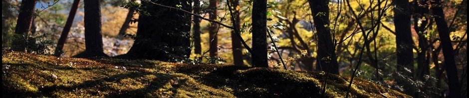

Bravo à l’équipe Lille 1 qui est arrivée ce week end 3ème à la 27ème coupe des Alpes.
Bravo également à tous les participants et surtout un grand merci au club de Chambéry et à tous les bénévoles pour l’accueil et l’organisation.
We use cookies to help you navigate efficiently and perform certain functions. You will find detailed information about all cookies under each consent category below.
The cookies that are categorized as "Necessary" are stored on your browser as they are essential for enabling the basic functionalities of the site. ...
Necessary cookies are required to enable the basic features of this site, such as providing secure log-in or adjusting your consent preferences. These cookies do not store any personally identifiable data.
Functional cookies help perform certain functionalities like sharing the content of the website on social media platforms, collecting feedback, and other third-party features.
Analytical cookies are used to understand how visitors interact with the website. These cookies help provide information on metrics such as the number of visitors, bounce rate, traffic source, etc.
Performance cookies are used to understand and analyze the key performance indexes of the website which helps in delivering a better user experience for the visitors.
Advertisement cookies are used to provide visitors with customized advertisements based on the pages you visited previously and to analyze the effectiveness of the ad campaigns.


Bravo à l’équipe Lille 1 qui est arrivée ce week end 3ème à la 27ème coupe des Alpes.
Bravo également à tous les participants et surtout un grand merci au club de Chambéry et à tous les bénévoles pour l’accueil et l’organisation.
Bonjour,
Voici résultats de Championnat de France de Jodo de ce week end :
Catégorie 2e dan : 3e place, médaille de bronze pour Boris PIAU
Catégorie 5e dan : 3e place, médaille de bronze pour Olivier BAYART
Equipes : 2e place, médaille d’argent pour le Club Lillois
Résultats des passages de grade :
1er dan : Eric Lartigau
3e dan : Boris Piau
Félicitations à tous les participants et Bonne semaine à tous

Bravo à l’équipe de Lille qui arrive première à la compétition qui a eu lieu le week end dernier en Israel durant le stage « RAICK memorial seminar ».
NTERREGIONS HAUTS DE FRANCE 2018
Bravo à tous les participants de l’inter-région Hauts de France qui s’est tenu à Lille dimanche 21 janvier.
Merci beaucoup à tous ceux qui ont concouru à la bonne organisation et au bon déroulement de cet événement !
Voici ceux qui se sont sélectionnés pour les championnats de France 2018 :
> Individuels féminines : Toutes !
> Individuels excellence : Léopold (1er), Jean-Philippe (2ème), Jean et Eric (3èmes)
> Individuels honneur : Oscar (1er), Nicolas (2ème) et Loïc (3ème)
> Equipes honneur : 3 équipes de Lille (1ère, 2ème & 3ème).
Bravo à tous pour vos combats !
Félicitations à l’équipe lilloise (Romain, Jean Philippe et Jean) qui est arrivée 1er à la Nakakura organisé durant le stage d’hiver à Bruxelles. Bravo également a Kei et à romain qui décrochent respectivement la première et la seconde place en individuel !
Félicitations également à Eric Favre pour l’obtention de son troisième Dan de Kendo, et à Carole Guichard pour son 4ème Dan de Iaido.
Un week end Riche en récompense !! Bravo à tous
Félicitations à l’équipe lilloise (Jean Philippe, Jean et Léo) qui est arrivée 2ème à l’open de Picardie ce week-end ainsi qu’à Stéphanie et Laura pour leur seconde place en individuelle féminine !

Expert en Arts Martiaux japonais :
Kyoshi 7 ème dan Kendo et IaÏdo.
Diplômé d’état 2eme degré Judo et Aïkido.
Directeur technique EKF (Fédération Européenne de Kendo : Kendo, IaÏdo, Jodo).
Enseignant de Kendo et de Iaïdo au club Lillois de Judo Kendo.
Après avoir débuté la pratique du Kendo et du Iaïdo (1972-1973) sous la direction de YOSHIMURA senseÏ (conseiller technique Kendo du CNK-FFJDA ;
8 ème dan).
Premier non japonais à atteindre le grade de 7 eme dan Kyoshi de Kendo et de Iaïdo, Jean-Pierre RAICK n’a cessé d’œuvrer au développement et à l’enseignement traditionnel de ces deux disciplines.
Cet esprit résolument empreint de Tradition, nous a transmis au-delà de tout aspect uniquement sportif, la quintessence de ces arts. Son enseignement reçu et nourri par ceux d’une longue filiation de maîtres véritables, s’est diffusé au travers toute l’Europe.
Jean-Pierre RAICK est l’un des rares enseignants au monde des Arts Martiaux à avoir formé plus de douze pratiquants septième dan dont huit appartiennent au Club Lillois de Judo-Kendo. Il a fait de ce dojo lillois l’un des plus prestigieux d’Europe.
L’enseignement fondamental qu’il dispensait se résume ainsi : construire un homme véritable à travers la pratique régulière et assidue de ces disciplines traditionnelles, citons-le :
« Au travers de l’entrainement comprenant des méditations zen, j’aborde la vie avec l’esprit tranquille. Mon cœur (esprit) et mes mains sont unifiés. Je sais que l’art de l’escrime qui nous enseigne comment tenir tête à un ennemi développe aussi des valeurs précieuses pour la vie de tous les jours. Lorsque vous accédez à un degré d’entrainement et de progrès suffisants, vous ne verrez plus d’ennemis, c’est-à-dire que vous serez dans le cœur de l’ennemi. Alors vous parviendrez à un état d’incomparable altruisme. »
Témoignage d’un grand maître japonais Masatake SUMI : « ce que vous avez laissé au kendo est inestimable ».
Les funérailles auront lieu ce mardi 17 octobre prochain à 09H30 à l’église Saint Maurice des Champs de l’Lille Saint Maurice, Faubourg de Roubaix – 59000 LILLE
Félicitations aux pratiquants du club de Lille qui ont participé à l’open de l’oise ce week end à Ressons sur matz.
L’équipe de Lille constituée de Jean, Jean-Philippe et Romain arrive première.
En individuel Romain arrive premier et Jean troisième.
Bravo également à tous les compétiteurs et pour les beaux combats qui ont eu lieu pendant cet événement.
Félicitations à tous les membres du club de Lille qui ont participé au passage de grade ce dimanche à Bruxelles, Voici les résultats :
KENDO 3ème DAN
> Grégory LIMORATTO
> Bertrand ROYER
> Alexandre TOPART
KENDO 5ème DAN
> Valentine BAILLIET
> Jean CARPENTIER
Félicitations !
Félicitations à l’équipe lilloise qui est arrivée 3ème aux championnats exellences ce week-end ainsi qu’Aurélia pour son fighting spirit !
Bravo à tous pour ces beaux combats !


{kind=link}
{kind=link}
{kind=link}
{kind=link}
{kind=link}
{kind=link}
{kind=link}
{kind=link}
{kind=link}